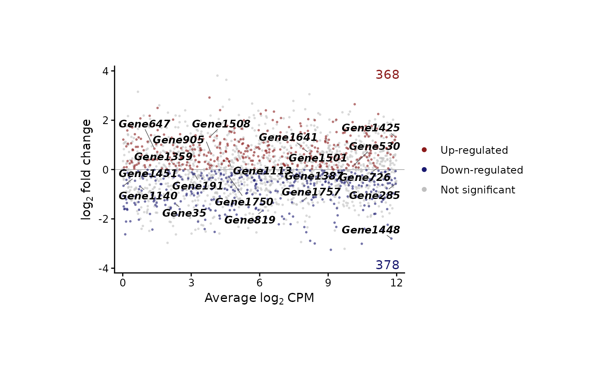
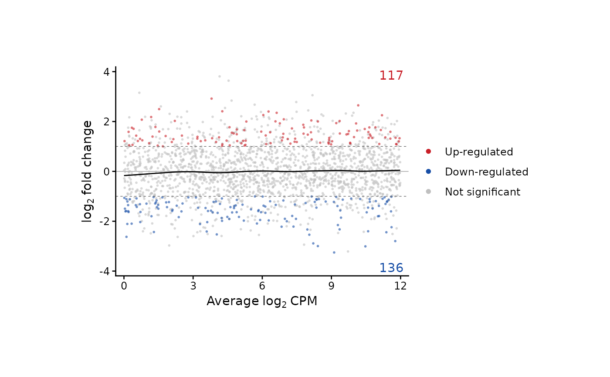

Plots the log2 fold change of each feature (M) against its
mean expression (A), colouring features that are
significantly up- or down-regulated, with optional labels,
counts of DE features and a trend line. The MA plot shows how
fold changes and significance depend on expression: lowly
expressed features have noisy fold changes, and a trend away
from 0 points to an expression-dependent bias (e.g. a
normalization problem). Same colours, labels and arguments as
plot_volcano; reads edgeR, DESeq2, limma and
other results with standardize_de.
Usage
plot_ma(
data,
method = c("auto", "edgeR", "DESeq2", "limma", "seurat"),
feature.col = NULL,
logfc.col = NULL,
p.col = NULL,
padj.col = NULL,
mean.col = NULL,
mean.scale = NULL,
padj.cutoff = 0.05,
logfc.cutoff = 0,
trend = FALSE,
label = c("top", "selected", "none"),
label.n = 10,
label.features = NULL,
label.rank = c("padj", "logfc", "product"),
label.size = NULL,
italic.genes = TRUE,
annotate.counts = c("corner", "none"),
symmetric = TRUE,
cols = NULL,
up.label = "Up-regulated",
down.label = "Down-regulated",
ns.label = "Not significant",
pt.size = 1,
alpha = 0.6,
raster = NULL,
raster.dpi = 1000,
panel.width = 3.5,
panel.height = 2.5,
legend.position = "right",
bg = "transparent",
seed = 42
)Arguments
- data
DE results of one comparison: a data frame (or a DESeq2 `DESeqResults` / edgeR `TopTags`), with feature names as row names or in `feature.col`
- method
The tool that produced the results: "auto" (default) detects it from the column names; or one of "edgeR", "DESeq2", "limma" and "seurat"
- feature.col
Column of feature (gene) names. If NULL (default), the row names (or the `gene` column of Seurat results)
- logfc.col
Column of the log2 fold change. If NULL (default), taken from `method`. A shrunken log fold change (DESeq2
lfcShrink()with apeglm or ashr) is the recommended input: without shrinkage, lowly expressed features spread into a wide fan at the left of the plot, which hides the features that are reliably changed- p.col
Column of the raw p-value. If NULL (default), taken from `method`. Only used to compute adjusted p-values (Benjamini-Hochberg) when the table has none
- padj.col
Column of the adjusted p-value. If NULL (default), taken from `method`. It is both plotted on the y-axis and used to decide significance
- mean.col
Column of the mean expression. If NULL (default), taken from `method`: edgeR `logCPM`, DESeq2 `baseMean`, limma `AveExpr`. Seurat results have none (use
plot_volcano)- mean.scale
Scale of the mean expression column: "log2" (values already on a log2 scale, such as edgeR logCPM or limma AveExpr; drawn as they are) or "linear" (such as DESeq2 baseMean; drawn on a log10 axis). If NULL (default), taken from `method`; it must be given with `mean.col`
- padj.cutoff
Adjusted p-value below which a feature is significant, default is 0.05. Drawn as a dashed horizontal line
- logfc.cutoff
Absolute log2 fold change a significant feature must exceed, default is 0 (any change). When above 0, drawn as dashed vertical lines
- trend
Whether to draw a trend line of the log fold change along the mean expression, through all features (robust locally weighted regression,
stats::lowess()), to spot an expression-dependent bias. Default is FALSE- label
Which features to label:
- "top"
(default) the `label.n` most significant features of each direction, ranked by `label.rank`, plus any `label.features`
- "selected"
only `label.features`, whether or not they are significant
- "none"
no labels
- label.n
Number of features to label per direction with `label = "top"`, default is 10. Every requested label is drawn; when long labels (e.g. Ensembl IDs) crowd the same corner they can overlap, so lower `label.n` or widen `panel.width`
- label.features
Features to label. Always labelled with `label = "selected"`, and in addition to the top features with `label = "top"`. Matched exactly, so the case of gene symbols matters (e.g. "CD3E" in human, "Cd3e" in mouse and rat)
- label.rank
How the top features are ranked with `label = "top"`: "padj" (default), "logfc" or "product", as in
plot_volcano- label.size
Size of the labels in mm. If NULL (default), the small small text size of the theme (9 pt)
- italic.genes
Whether labels are gene names, set in italics. Default is TRUE; set FALSE for features that are not genes (e.g. peaks or pathways). Labels are bold either way
- annotate.counts
How to show the numbers of up- and down-regulated features: "corner" (default; up-regulated at the top right, down-regulated at the bottom right) or "none"
- symmetric
Whether the y-axis (log fold change) is symmetric around 0, default is TRUE
- cols
Colours of the up-regulated, down-regulated and not significant features: a vector named `up`, `down` and `ns` (any of them; the others keep their default), or three colours in that order. NULL (default) is `c(up = "#C91F28", down = "#174EA6", ns = "grey75")`
- up.label, down.label, ns.label
Names of the three classes in the legend (and next to the arrows with `annotate.counts = "arrow"`). Default "Up-regulated", "Down-regulated" and "Not significant"
- pt.size
Point size, default is 1
- alpha
Point opacity, default is 0.6
- raster
Whether to rasterize the points while keeping labels, lines and text as vectors: NULL (default) rasterizes when more than 5,000 features are drawn, or TRUE / FALSE
- raster.dpi
Resolution of the rasterized points, default is 1000. Match the `dpi` used when saving raster (e.g. png) output
- panel.width
Width of the panel in inches, default is 3.5
- panel.height
Height of the panel in inches, default is 2.5
- legend.position
Position of the legend. If NULL (default), "right", or "none" with `annotate.counts = "arrow"` (the arrows already name the directions). A legend at the "top" is usually wider than the panel, which widens the saved figure
- bg
Background colour, default is "transparent"
- seed
Random seed for the placement of labels, default is 42
Details
Features are classed as in plot_volcano: up-regulated when
the adjusted p-value is below `padj.cutoff` and the log2 fold change above
`logfc.cutoff`, down-regulated when below `-logfc.cutoff`, not significant
otherwise. Features without a log fold change, an adjusted p-value or a
mean expression (or, on a log10 axis, with a mean of 0) are not drawn.
Every point is drawn at its own value; nothing is capped.
The plot has a fixed panel size; save it with save_plot. Its
data (one row per drawn feature, with columns `direction`, `mean_plot`,
the value on the x-axis, and `labelled` added to the standardized DE
table) can be written with export_source_data.
Examples
set.seed(1)
de <- data.frame(
logFC = rnorm(2000, sd = 1),
logCPM = runif(2000, 0, 12),
PValue = runif(2000)^4,
row.names = paste0("Gene", 1:2000)
)
de$FDR <- p.adjust(de$PValue, "BH")
plot_ma(de)
#> Detected edgeR results (logFC, PValue, FDR)

plot_ma(de, trend = TRUE, label = "none", logfc.cutoff = 1)
#> Detected edgeR results (logFC, PValue, FDR)

if (FALSE) { # \dontrun{
# DESeq2: shrunken fold changes, baseMean on a log10 axis
res <- DESeq2::lfcShrink(dds, coef = "condition_KO_vs_WT", type = "apeglm")
save_plot(plot_ma(res), "ma.pdf")
} # }